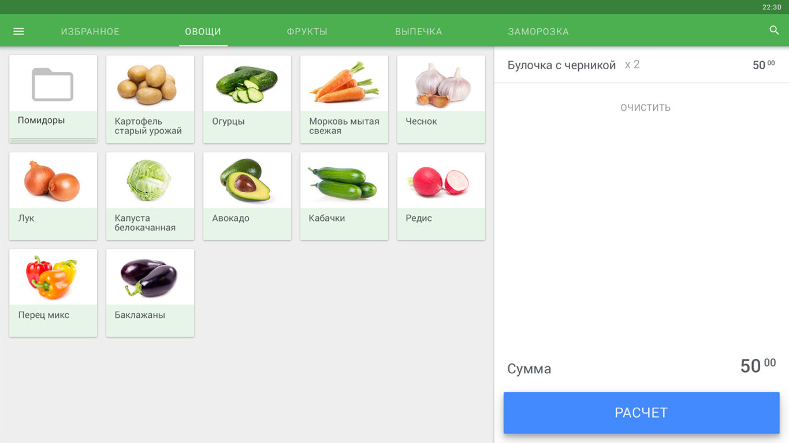
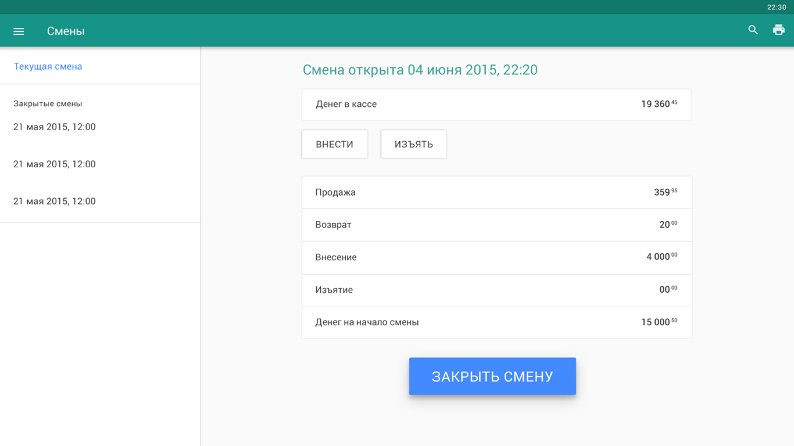
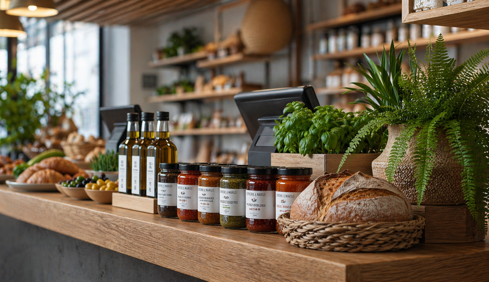
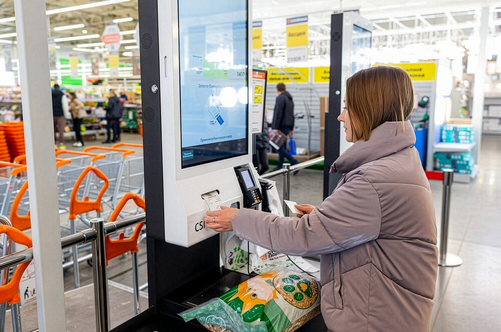

Turning retail tech into something people trust

Led the creation of Russia’s first touchscreen POS systems, reshaping how thousands of businesses sell, learn, and operate every day.
No manuals. No hand-holding. Just tools people could figure out in five minutes, even if they’d never used a POS before.

Overview
CSI, one of Russia’s leading retail tech companies, launched Dreamkas to pioneer the country’s first modern touchscreen POS systems. The goal was to create intuitive tools requiring no training, a new standard for thousands of businesses.
Overview
I led the UX, shaping interaction logic, language, and workflows from the ground up. Through field research and close team collaboration, we built a system that brought clarity, speed, and trust to diverse retail environments.


I helped bring touchscreen POS technology into everyday retail, reaching thousands of businesses across the country.
The Challenge
A sudden regulatory shift forced every business, from bakeries to open-air markets, to adopt certified digital registers within months.
Thousands of cashiers and store owners with limited digital skills had to master unfamiliar systems while handling real-time sales under constant pressure.
The market was dominated by outdated, unintuitive systems that made everyday retail harder, not easier.

My Part in This
As the only UX designer at the start of the project, I wore many hats — from leading user research and prototyping to establishing workflows, onboarding teams, and driving early product decisions.
I shaped the first interaction patterns, built design foundations from scratch, and collaborated closely with engineers and business stakeholders to bring the vision to life.
Drove the entire UX and UI workflow from early discovery and concept development to interactive prototypes, wireframes, and final production interfaces. Focused on building clarity and consistency across every stage.
Interviewed cashiers and business owners across Russia to uncover pain points, workflows, and mental models. Ran usability tests — including eye-tracking sessions — to identify friction points and improve interface readability under real retail pressure.
Built interactive prototypes to test core flows early and often. Incorporated continuous feedback from users, business stakeholders, and internal teams to refine the interface for speed, clarity, and trust.
Worked hand-in-hand with developers, 3D designers, hardware engineers, and marketing teams to align every interaction with device specifications, operational logic, and brand positioning.
Created the initial design system — including color, typography, spacing, and component logic — to support fast scaling of features and smooth onboarding of new designers as the team grew.
Over time, my role expanded beyond individual contributions. I helped define the company’s approach to UX, introducing new tools and processes, mentoring new team members, and influencing how design fit into business strategy.
My work shaped not only the product, but also the growing culture of design inside Dreamkas.
As the company scaled, so did my role. I became the go-to person for all things UX and design, helping shape not just one product, but the entire design direction across multiple teams and initiatives.
What started as a solo design role turned into a pivotal experience in team-building, systems thinking, and product ownership. I left company three years later knowing I had helped shape not just products, but a sustainable design culture that could grow without me.

Research & Discovery
Research & Discovery
To design a POS system for users who had never used one, I had to start from the source, real cashiers, business owners, and the messy realities of retail work.
This phase was all about understanding behaviors, uncovering pain points, and translating those into clear design priorities.
Conducted dozens of in-person interviews with cashiers and store managers in settings ranging from large retail chains to small family-run shops. Focused on understanding their daily routines, workarounds, and pain points to uncover real behavioral patterns.
Spent time in actual stores observing how cashiers used existing systems during live operations, especially at peak hours. These sessions revealed critical usability breakdowns that wouldn’t surface in controlled environments.
Ran testing sessions both on-site and in controlled spaces, including participants who had never used a POS system before. This helped evaluate learnability, error recovery, and the clarity of core workflows.
Spoke with sales representatives, installers, and technical support teams to map out recurring confusion points. Their firsthand knowledge of user mistakes and questions provided valuable insights for refining flows and terminology.
Held regular syncs with product owners, developers, and marketing to ensure research findings directly informed product priorities and business decisions.

That’s me in the field, learning directly from cashiers during their shifts.
“Olga has a rare ability to understand people on a deeper level. It changed the way we made decisions as a team.”
Understanding the Users
At that time most Russian shops relied on outdated button-based registers with tiny screens, while smaller businesses used pen and paper, leading to errors and compliance issues. New fiscal laws forced a rapid switch to digital systems, users suddenly had to work with tools they’d never encountered.
This exposed how poorly existing solutions fit real retail life. Cashiers had to navigate complex, unfamiliar systems under pressure. Store owners managed training and technical issues they didn’t understand. Support teams struggled with endless troubleshooting.

Cashiers were the ones standing between outdated machines and impatient queues. Most had never touched a touchscreen before, and many were non-tech-savvy or temporary workers with no formal training.
Cashiers had to remember codes, sequences, and button positions on monochrome screens. One wrong press could interrupt the transaction, slow the line, and trigger stress — especially during peak hours.
Cluttered layouts and unclear labels forced users to stop, think, and double-check actions. Mis-taps were common, and every pause increased pressure and customer impatience.
Buttons were too small, spacing was tight, and feedback was inconsistent, making even simple actions feel risky. Under pressure, these micro-frictions added up to slower checkouts.
Many systems were text-heavy, complex, and overloaded with features. They required training, assumptions, and familiarity — all misaligned with fast retail environments and frequent staff turnover.
Cashiers had to constantly navigate between scanner, keyboard, printer, and interface. The physical choreography added time, errors, and unnecessary effort to each customer interaction.
Without clear automation or guided flows, calculations, discounts, and returns were prone to mistakes. Delays created tension for both customers and staff.
Hesitation was common because users feared irreversible actions. A lack of clear undo paths increased anxiety and reduced overall speed and confidence.

For small and mid-sized business owners, running operations meant juggling legal compliance, manual reporting, and training staff on systems they barely understood themselves.
Many store owners still relied on handwritten receipts and manual records. These methods led to frequent mistakes, missing documentation, and exposure to fines and legal issues.
Configuring existing POS solutions was costly and time-consuming. Even small adjustments — prices, menus, taxes — often required external technicians, delaying operations and increasing expenses.
With confusing tools, owners and managers had to personally stand at the till and reteach basic actions again and again. This slowed daily work and pulled them away from running the business.
Sales data and daily summaries were buried, unclear, or spread across different systems. Extracting insights took unnecessary effort, making management harder and limiting growth visibility.

Support teams and installers worked with outdated hardware and inconsistent setups across thousands of locations.
Legacy tools were unstable and inconsistent, forcing support teams to troubleshoot issues that stemmed from unclear flows and mismatched interfaces rather than real technical faults.
Even small variations between stores led to recurring problems. Support teams spent their time solving identical issues across locations instead of preventing them at the system level.
Rolling out improvements was slow, manual, and disruptive. Technicians had to visit stores in person, delaying resolutions and increasing operational costs.
Support agents kept seeing the same mistakes, frustrations, and misunderstandings from cashiers and managers — yet had no way to address them because the root cause was baked into the interface itself.
Understanding all perspectives was essential to build something that worked not in theory, but in the messy reality of real retail.

From Research to Real Product
From Research to Real Product
This wasn’t just a handful of interviews and a couple of wireframes. It was months of deep, iterative work, the kind of behind-the-scenes process that rarely makes it into the spotlight. There were hundreds of prototypes, multiple rounds of testing, and constant discussions with developers, stakeholders, and the sales team.
Translating that research into a real product meant rethinking everything from interaction logic to visual language. I created the core UX foundations, while real user insights shaped how the product behaved, not assumptions. The result was a system designed to scale to thousands of stores and perform in real retail chaos.
Every extra step, vague label, or tiny tap target added stress and slowed everything down. In real retail life, there was no patience for friction. The interface had to remove obstacles, not create new ones.
There was no time or budget for training. Most cashiers were expected to pick up the system on their first day, often mid-shift, with a queue in front of them. The product had to explain itself through clear patterns and flows, not manuals.
Busy stores left zero room for hesitation. One wrong tap could stall the line, frustrate customers, and disrupt the entire checkout rhythm. Every screen and state had to support speed and confidence under pressure.
Many users didn’t understand common UI patterns like back buttons or modal windows. The system had to adapt to their logic, not expect them to adapt to ours.
Mistakes caused real anxiety, especially when money was involved. Undoing or fixing an action needed to be instant and obvious. Safety wasn’t a nice-to-have, it was essential for trust.
Big touch targets, clear labels, and immediate feedback were critical. In noisy, fast environments, the interface had to communicate at a glance, leaving no room for doubt.
They spent too much time training new staff, fixing avoidable mistakes, and struggling with reports. Tools had to make daily operations smoother, not add another layer of frustration.
The same usability issues kept appearing across hundreds of stores. Standardized patterns and predictable flows were essential to reduce support tickets and keep rollouts manageable at scale.

Part of the Viki POS lineup, multiple models with different screen sizes and configurations, built to fit any retail environment.
The result was a system designed to scale to thousands of stores and perform in real retail chaos.
The Core User Experience
The Core User Experience
Designing the cashier interface was the most hands-on part of the project. This was the screen people lived in all day, where every tap and layout choice shaped how fast and confidently they could work. It had to feel clear from the first second, no manuals, just clarity.
I spent a lot of time refining the small things that make a difference under pressure, spacing, button sizes, the way errors appeared, the rhythm of checkout flows. My goal wasn’t to make something flashy or “modern”, but to give people a tool they could trust, no matter their experience level.
Sales, returns, split payments, and discounts were streamlined for fast tapping and minimal cognitive load. Common actions were surfaced, edge cases tucked away but easy to find.
Color, spacing, and iconography guided the eye without overwhelming it. The layout prioritized speed and readability, helping users make decisions in seconds, not minutes.
Cafés needed quick table tracking, pharmacies needed expiration visibility, grocery stores valued simplicity above all. We adapted layouts to match real operational flows without fragmenting the system.
Error states didn’t shout or confuse — they calmed. Clear messaging, visible escape routes, and forgiving flows helped non-tech users recover without panic.
We intentionally avoided the cold, machine-like look of legacy systems. Soft visuals and clean language made the interface approachable, even for first-time users.
Essential tasks like drawer reconciliation, X/Z reports, and end-of-day summaries were redesigned to reduce steps and errors, while still giving managers control and oversight.


My goal wasn’t to make something flashy or “modern”, but to give people a tool they could trust, no matter their experience level.
Core UX interface screens

Under the Hood
Under the Hood
While cashiers interacted with clear, focused screens, the system quietly handled a dense network of operations, legal rules, and integrations.
This invisible layer was critical, it’s what made the product reliable at scale, not just pleasant to use.
Enabled deep customization — from tax logic to receipt formatting — without overloading the interface.
Updates rolled out smoothly, even in low-connectivity areas, with offline mode and automatic recovery ensuring stores never went down mid-sale.
Alcohol tracking (EGAIS) and fiscal rules were embedded into the UX with smart defaults, reducing friction and errors for end users.
Quick diagnostics, error logs, and QR-based reporting gave tech teams fast visibility into problems without disrupting operations.
Different user types (cashiers, managers, admins) accessed exactly what they needed — no clutter, no risk.


Back-office service screens

Results for Cashiers
Results for Cashiers
For cashiers, switching to Dreamkas POS was a leap forward. What used to require days of training and constant supervision became something they could grasp in minutes. Even those with no touchscreen experience could confidently start working almost right away.
The system simplified daily tasks, sped up checkout, and reduced stressful mistakes. Instead of fighting outdated machines, cashiers could focus on what mattered most: serving customers quickly and accurately.
Training time dropped by 60%. Cashiers who once spent days memorizing codes and sequences were able to get up and running within minutes. Even staff with zero touchscreen experience could confidently complete transactions without manuals or supervision.
The redesigned flows were tested in live environments with long queues and peak-hour stress. Clear visual hierarchy and logical tap sequences enabled cashiers to work 25% faster on average, cutting wait times and improving service flow.
Error-proof patterns, smart defaults, and forgiving flows reduced user errors by 40%, removing a major source of stress. Instead of fearing mistakes, cashiers could focus on the customer in front of them.
By replacing cluttered black-and-white terminals with clear, human-centered UI, we built genuine confidence. Cashiers described the new system as “simple,” “comfortable,” and “finally understandable.”


“I’m not great with technology, and I was worried at first. But this one feels simple, like it was made for people like me.”
Designing for the Real World
Designing for the Real World
Design decisions only matter if they work where it counts, in real stores, with real people, under real pressure.
In this video, you’ll hear from cashiers and store owners across Russia who use Dreamkas every day, in their own words.

Results for Business
Results for Business
For CSI and its retail clients, Dreamkas became more than a product — it was a business engine. This was a multi-year rollout that fundamentally changed how thousands of stores operated every day.
Dreamkas set a new retail standard nationwide, expanded CSI’s market reach, strengthened the brand’s reputation, and unlocked new revenue streams through regulatory compliance and cloud services.
Dreamkas capitalized on new fiscal regulations and became a go-to POS solution for small and medium retailers.
Thousands of stores switched to Dreamkas Viki smart terminals during the 54-FZ transition, giving CSI broad market coverage.
With 8 registered models, Dreamkas became one of the top POS manufacturers in the country, competing with Atol and Evotor.
Dreamkas helped CSI reach SMEs, diversify revenue, and solidify its position among the top retail IT suppliers.
By making the system intuitive and stable, support requests dropped by 40%, freeing up tech teams to focus on growth instead of troubleshooting repetitive issues.
The success of the rollout established CSI as a leading retail IT provider in the country, opening new revenue streams through compliance-ready features, cloud services, and partnerships.
The unified UX and system architecture laid the groundwork for future products, from self-checkouts to advanced reporting, without fragmenting the platform or retraining entire workforces.


Dreamkas became one of the most profitable and recognizable offerings in our ecosystem. It strengthened our brand, accelerated sales, and positioned CSI as a national leader in retail tech.

Learnings & Growth
Learnings & Growth
This project marked a real turning point in my career, the moment I shifted from designing individual screens to shaping entire systems. It challenged me to think beyond pixels: about real-world constraints, organisational culture, and how design can shape the daily lives of thousands of people.
It was also the first time I grew from being the only designer in the room to leading the UX vision, mentoring others, and influencing how a company thought about design. The lessons I learned here still define how I work today.
Crafting interfaces for people with no touchscreen experience, under real pressure, required radical simplicity and empathy.
I turned “maybe later” into “let’s test it” by grounding every decision in real field insights.
Regulations were strict, timelines were tight — clarity and usability had to survive inside those limits.
Trust came from showing, testing, iterating, and bringing everyone into the loop.
I built processes, onboarded new designers, and shaped a shared UX culture inside a tech-heavy environment.

Me again, during one of many real-store tests, making sure every tap felt right before it reached thousands of users.
I discovered that real progress happens when you design for real people, not ideal users, and meet them exactly where they are.
Before I Close This Case
Before I Close This Case
I can’t finish this case without mentioning one more project that meant a lot to me, and still does. One day, this project will get its own full case study — it deserves it.
But I couldn’t close this chapter without mentioning one of the most meaningful things I helped design: the CSI self-checkout system.

From Fear to Familiar
From Fear to Familiar
At the time, self-service checkouts were a new and unfamiliar concept in Russia. Most people had never used one and didn’t trust them. The UX challenge wasn’t just about flow or UI, it was about building confidence, overcoming fear, and guiding people (including older generations) through something that felt entirely foreign.
These kiosks were rolled out in some of the country’s largest grocery chains — Spar, Lenta, OBI, Azbuka Vkusa, and more, which made the stakes even higher. The responsibility I felt as a designer was enormous: what we built had to work for everyone, in real-world conditions, at scale.

Still in Use, and Still Making Life Easier
And still, the self-checkout systems I helped design are still out there. And they haven’t just survived, they’ve stayed almost exactly as we built them. The same flows. The same illustrations. The same clear, modern interface we created when the concept was brand new. On a recent visit to Russia, I got to try them again, and nothing had changed.
They still worked. They still felt simple, helpful, familiar. And more importantly, they still made things easier: for shoppers in a hurry, for older users who once hesitated to try, and for the cashiers whose hands are now a little less full. This wasn’t built for buzz. It was real, long-lasting change.
Still in Use, and Still Making Life Easier
They still worked. They still felt simple, helpful, familiar. And more importantly, they still made things easier: for shoppers in a hurry, for older users who once hesitated to try, and for the cashiers whose hands are now a little less full. This wasn’t built for buzz. It was real, long-lasting change.


Impact feels different when it reaches the people you care about. My family and friends in Russia use these systems every day, effortlessly and without thinking. Knowing that something I designed became part of ordinary life… that’s the kind of impact I’m most proud of.